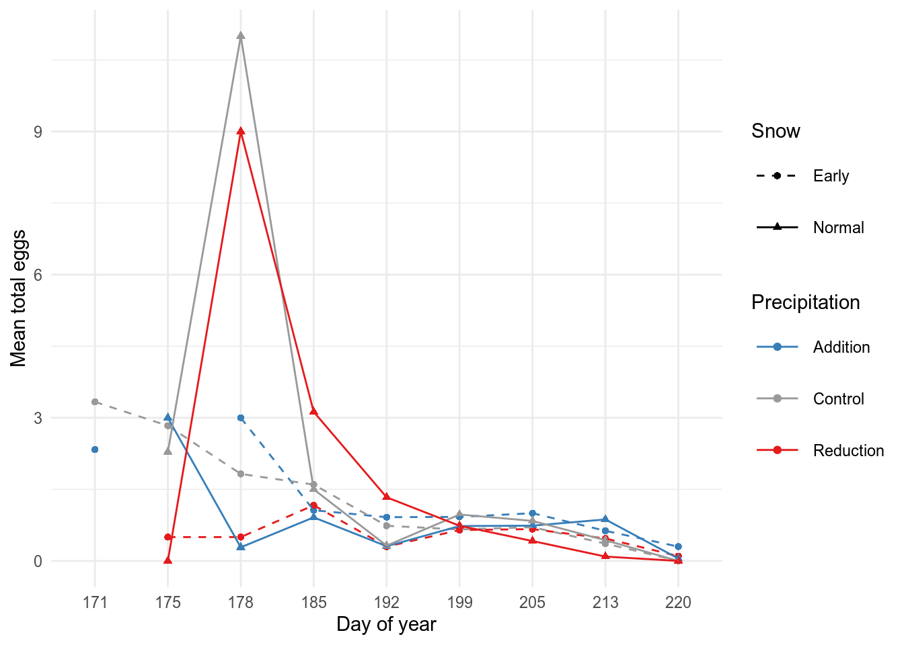
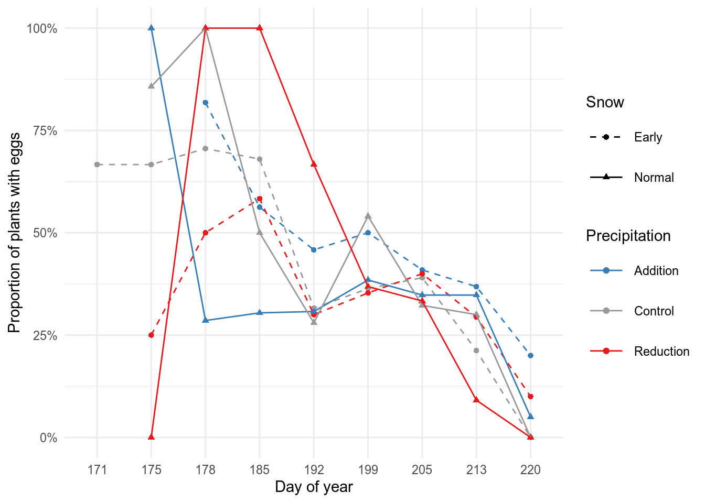

Purpose
Analyze selection on and plastic responses of floral and vegetative traits of Ipomopsis aggregata to manipulations of snowmelt and summer precipitation. Determine whether plasticity is adaptive (improves survival and reproduction). Part of a larger project to understand the potential for evolutionary rescue in alpine plants under climate change.
Treatments
library(tidyverse)
library(lubridate)
library(RColorBrewer)
library(knitr)
knitr::opts_chunk$set(comment="", cache=T, warning = FALSE, message = FALSE, fig.path = "images/")
ggplot2::theme_set(theme_grey())
load("data/maxfield_data.rda")Snow melt vs. treatments
ggplot(hobo %>% filter(month(time)%in%4:6), aes(x=time, y=temp, color=plot)) + facet_wrap(vars(year), scales="free_x", ncol=1) + geom_line() + geom_hline(yintercept=1) 
ggplot(hobo %>% filter(month(time)%in%4:6), aes(x=time, y=intensity, color=plot)) + facet_wrap(vars(year), scales="free_x", ncol=1) + geom_line() + geom_hline(yintercept=15000) 
ggplot(meltdates, aes(x=sun_date, y=warm_date, color=snow, label=plot)) + geom_text(size=6) + facet_wrap(vars(year), scales="free") + scale_x_continuous(breaks=seq(from=100, to=200, by=2)) + scale_y_continuous(breaks=seq(from=100, to=200, by=2)) + theme(panel.grid.minor=element_blank()) + geom_abline(intercept=0, slope=1) + scale_color_manual(values=snow_pal)
Weather data
ggplot(daily_precip, aes(y=precip_mm, x=julian)) + geom_col(fill=brewer.pal(3, "Greens")[3]) + facet_wrap(vars(year), ncol=1) + scale_y_continuous(limits=c(0,125)) + labs(x="Day of year", y="Precipiation (mm)") + theme_minimal()
Soil moisture vs. treatments
#ggplot(sm, aes(x=water, color=snow, y = VWC)) + geom_boxplot() + facet_wrap(vars(factor(date))) +
# labs(y="Volumetric water content (%)", x="Precipitation", color="Snowmelt") +
# scale_color_manual(values=snow_pal)
#over time
ggplot(sm, aes(x=yday(date), shape=snow, linetype=snow, color=water, y = VWC)) +
facet_wrap(vars(year), ncol=1) +
#geom_bar(data=mt, aes(x=yday(date), y= ..count../10), inherit.aes = F, width=1, fill="yellow")+
geom_jitter(height=0, width=0.3) + geom_smooth(se=F, span=0.5) +
geom_col(data=daily_precip %>% filter(year>2017), aes(x=julian, y=precip_mm), inherit.aes = F, fill=brewer.pal(3, "Greens")[3]) +
geom_line(data=daily_temp %>% filter(year>2017), aes(x=julian, y=av_temp_2m_C), inherit.aes = F, color=brewer.pal(3, "Oranges")[3]) +
geom_vline(data=meltdates, aes(xintercept=warm_date, linetype=snow), inherit.aes=F, color=brewer.pal(3, "Purples")[3])+
scale_x_continuous(limits=c(110, 230), breaks=scales::breaks_extended(10), expand=expansion(0,0)) + scale_y_continuous(limits=c(-3, 20)) +
labs(y="Volumetric water content (%) / Daily precipitation (mm) / Mean temperature (C)",
x="Day of year", color="Precipitation", shape="Snow", linetype="Snow") +
scale_color_manual(values=water_pal) + scale_linetype_manual(values=c(2,1)) + theme_minimal() +
theme(legend.key.size = unit(2, "lines"))
Census
The annual census at the beginning of the summer contains information on mortality, flowering status, and plant size (longest leaf and number of leaves for each rosette).
Load census data
Tally the number of each status combination for each year.
nrf_count <- bind_rows(
allowed_nrf %>% filter(year==2019) %>% left_join(cen19 %>% mutate(nrf=paste(notes, rosettes, flowering)) %>% group_by(nrf) %>% tally()),
allowed_nrf %>% filter(year==2020) %>% left_join(cen20 %>% mutate(nrf=paste(notes, rosettes, flowering)) %>% group_by(nrf) %>% tally()))
kable(nrf_count %>% select(-nrf) %>% arrange(year, status, desc(n)))| year | notes | rosettes | flowering | status | n |
|---|---|---|---|---|---|
| 2019 | nf | blank | blank | dead_nf | 215 |
| 2019 | dead | zero | n | dead_nf | 143 |
| 2019 | blank | zero | n | dead_nf | 18 |
| 2019 | nf | blank | n | dead_nf | 7 |
| 2019 | blank | blank | n | dead_nf | 6 |
| 2019 | dead | blank | n | dead_nf | 3 |
| 2019 | dead | one_or_more | n | dead_nf | 3 |
| 2019 | dead | zero | blank | dead_nf | 1 |
| 2019 | dead | zero | blank | dead_nf | 1 |
| 2019 | nf | zero | n | dead_nf | 1 |
| 2019 | blank | blank | y | flowering | 110 |
| 2019 | blank | one_or_more | y | flowering | 51 |
| 2019 | blank | indist | y | flowering | 3 |
| 2019 | nf | one_or_more | blank | recheck | 3 |
| 2019 | blank | zero | y | recheck | 2 |
| 2019 | blank | blank | blank | recheck | 1 |
| 2019 | chewed | zero | y | recheck | 1 |
| 2019 | nf | blank | y | recheck | 1 |
| 2019 | tagnf | one_or_more | blank | recheck | 1 |
| 2019 | tagnf | blank | blank | tagnf | 46 |
| 2019 | tagnf | blank | n | tagnf | 3 |
| 2019 | tagnf | zero | blank | tagnf | 1 |
| 2019 | blank | one_or_more | n | vegetative | 433 |
| 2019 | blank | indist | n | vegetative | 75 |
| 2019 | chewed | zero | n | vegetative | 23 |
| 2019 | blank | one_or_more | blank | vegetative | 19 |
| 2019 | chewed | one_or_more | n | vegetative | 7 |
| 2019 | chewed | indist | n | vegetative | 2 |
| 2020 | nf | zero | blank | dead_nf | 490 |
| 2020 | dead | zero | blank | dead_nf | 120 |
| 2020 | blank | one_or_more | y | flowering | 151 |
| 2020 | blank | blank | y | flowering | 50 |
| 2020 | chewed | one_or_more | y | flowering | 17 |
| 2020 | chewed | indist | y | flowering | 1 |
| 2020 | chewed | blank | blank | recheck | 3 |
| 2020 | chewed | zero | blank | recheck | 1 |
| 2020 | chewed | blank | y | recheck | 1 |
| 2020 | chewed | zero | y | recheck | 1 |
| 2020 | tagnf | blank | blank | tagnf | 76 |
| 2020 | blank | one_or_more | n | vegetative | 233 |
| 2020 | chewed | one_or_more | n | vegetative | 6 |
| 2020 | chewed | zero | n | vegetative | 2 |
Duplicates
When there is more than one record for a plant tag in the census, which duplicate should be kept? Currently resolved by the following rules:
- sort by status (keep flowering > vegetative > recheck > dead_nf > tagnf)
- sort by date within status (if statuses are the same, keep the observation with the newest date)
- keep the first row and discard the other duplicates
This is automatic, but it may be better to resolve duplicates manually in some cases. The duplicates are written out to spreadsheets
#write out the duplicates
#cen19 %>% group_by(id) %>% filter(n()>1) %>% arrange(id, status, desc(date)) %>%
# write_sheet(ss=filter(datasheets, name=="Maxfield Results"), sheet="2019duplicates")
#cen20 %>% group_by(id) %>% filter(n()>1) %>% arrange(id, status, desc(date)) %>%
# write_sheet(ss=filter(datasheets, name=="Maxfield Results"), sheet="2020duplicates")
#distinct() keeps the first row after sorting, discards the other rows
cen19 <- cen19 %>% arrange(id, status, desc(date)) %>% distinct(id, .keep_all = TRUE)
cen20 <- cen20 %>% arrange(id, status, desc(date)) %>% distinct(id, .keep_all = TRUE)Status vs. treatment
ggplot(drop_na(cen19, water, snow) %>% filter(status %in% status_ok), aes(x=water, fill=status)) + facet_wrap(vars(snow), labeller=labeller(.cols=label_both)) + geom_bar(position="fill") + scale_fill_manual(values=status_pal) + labs(title="2019 status", x="Precipitation", y="Proportion", fill="Status")
ggplot(drop_na(cen20, water, snow) %>% filter(status %in% status_ok), aes(x=water, fill=status)) + facet_wrap(vars(snow), labeller=labeller(.cols=label_both)) + geom_bar(position="fill") + scale_fill_manual(values=status_pal) + labs(title="2020 status", x="Precipitation", y="Proportion", fill="Status")
Join 2019 and 2020 datasets
Check these tags missing in each year to make sure tags were not mis-read. When tags were not found in the other year, the part of the row for that year is “NA”.
Recorded in 2019 but not in 2020:
sort(setdiff(cen19[cen19$notes != "tagnf",]$id, cen20$id)) [1] "-642" "-643" "1B-244" "1B-245" "1B-246" "1B-247" "1B-248" "1B-252"
[9] "1B-662" "1B-679" "1B-680" "1B-681" "1B-682" "1B-683" "1D-31" "1D-32"
[17] "3A-659" "3B-602" "3B-603" "3B-604" "3B-605" "3B-611" "3B-612" "3B-615"
[25] "3B-617" "3B-618" "3B-622" "3B-623" "3D-852" "4A-100" "4A-66" "4A-83"
[33] "4A-90" "4B-162" "4B-172" "4B-192" "4C-115" "4C-29" "4C-32" "4D-39"
[41] "4D-61" "5A-172" "5A-177" "5B-14" "5B-287" "5C-205" "5C-213" "5D-231"
[49] "5D-236" "5D-284" "6B-32" "6C-103" "6D-80" "6D-81" Recorded in 2020 but not in 2019:
sort(setdiff(cen20[cen20$notes != "tagnf",]$id, cen19$id)) [1] "1A-244" "1B-199" "1B-66" "2A-100" "2A-589" "2A-684" "2A-689" "2A-99"
[9] "2B-171" "2C-256" "2D-225" "3C-120" "3C-185" "3C-213" "3C-86" "3C-94"
[17] "3D-255" "4A-124" "4A-168" "4B-594" "4B-596" "4B-680" "4C-641" "4C-642"
[25] "4C-643" "4D-66" "5B-30" "5B-32" "5B-88" "5C-" "5C-683" "6A-171"
[33] "6A-685" "6B-120" "6B-243" "6B-266" "6C-271" "6C-447" "6D-18" "6D-86" Status transitions
What did plants of a given status in 2019 look like now in 2020?
with(cen, table(`2019`=paste(status_19), `2020`=paste(status))) 2020
2019 dead_nf flowering NA recheck tagnf vegetative
dead_nf 294 21 27 1 18 51
flowering 127 15 9 1 7 16
NA 21 15 0 0 1 4
recheck 5 0 0 0 3 1
tagnf 13 7 15 0 12 5
vegetative 164 167 24 4 38 175ggplot(filter(cen, status_19 %in% status_ok, status %in% status_ok), aes(x=status_19, fill=status)) + geom_bar(position="fill") + scale_fill_manual(values=status_pal) + labs(fill="2020 Status", y="Proportion", x="2019 Status")
Survival and flowering vs. plant size
ggplot(filter(cen, status %in% status_ok), aes(x=r1_longest_19, fill=status)) + facet_wrap(vars(status), ncol=1) +
geom_density() + scale_fill_manual(values=status_pal) + labs(x="2019 Rosette 1 Longest Leaf (mm)", fill="2020 status")
ggplot(filter(cen, status %in% status_ok), aes(x=r1_leaves_19, fill=status)) + facet_wrap(vars(status), ncol=1) +
geom_density() + scale_fill_manual(values=status_pal) + labs(x="2019 Rosette 1 # Leaves", fill="2020 status")
Plant growth vs. treatments
Only includes plants that remained vegetative and did not die or flower.
ggplot(drop_na(cen, water, snow), aes(x=r1_longest_19, y=r1_longest, color=water, shape=snow)) + geom_point() + geom_abline(intercept=0, slope=1) + scale_color_manual(values=water_pal) + theme_minimal()+ labs(x="2019 Rosette 1 Longest Leaf (mm)", y="2020 Rosette 1 Longest Leaf (mm)", color="Precipitation", shape="Snowmelt")
ggplot(drop_na(cen, water, snow), aes(x=r1_leaves_19, y=r1_leaves, color=water, shape=snow)) + geom_point() + geom_abline(intercept=0, slope=1 )+ scale_color_manual(values=water_pal) + theme_minimal()+ labs(x="2019 Rosette 1 # Leaves", y="2020 Rosette 1 # Leaves", color="Precipitation", shape="Snowmelt")
Plant size vs. treatments
ggplot(drop_na(cen19, water, snow), aes(x=water, color=snow, y=r1_longest)) + geom_boxplot() + scale_color_manual(values=snow_pal) + labs(x="Precipitation", y="2019 Rosette 1 Longest Leaf (mm)", color="Snowmelt")
ggplot(drop_na(cen19, water, snow), aes(x=water, color=snow, y=r1_leaves)) + geom_boxplot() + scale_color_manual(values=snow_pal)+ labs(x="Precipitation", y="2019 Rosette 1 # Leaves", color="Snowmelt")
ggplot(drop_na(cen20, water, snow), aes(x=water, color=snow, y=r1_longest)) + geom_boxplot() + scale_color_manual(values=snow_pal) + labs(x="Precipitation", y="2020 Rosette 1 Longest Leaf (mm)", color="Snowmelt")
ggplot(drop_na(cen20, water, snow), aes(x=water, color=snow, y=r1_leaves)) + geom_boxplot() + scale_color_manual(values=snow_pal) + labs(x="Precipitation", y="2020 Rosette 1 # Leaves", color="Snowmelt")
Leaf traits
ggplot(lt, aes(x=wet_weight_g, y=dry_weight_g)) + geom_point() + geom_abline(slope=1, intercept = 0) + geom_abline(slope=1-median(lt$water_content), intercept = 0)
ggplot(lt, aes(x=leaf_area_cm2, y=dry_weight_g)) + geom_point() + geom_smooth(method="lm")
ggplot(lt, aes(x=leaf_area_cm2, y=wet_weight_g)) + geom_point() + geom_smooth(method="lm")
ggplot(lt, aes(x=water_content, y=sla)) + geom_point()
ggplot(lt, aes(x=water, color=snow, y = sla)) + geom_boxplot() + scale_color_manual(values=snow_pal) + labs(x="Precipitation", y="Specific Leaf Area (cm2/g)", color="Snowmelt")
ggplot(lt, aes(x=sla, y=water_content, color=water, shape=snow, linetype=snow)) + geom_point() + geom_smooth(se=F, method="lm") + scale_color_manual(values=water_pal) + scale_linetype_manual(values=c(2,1)) + theme_minimal() +
theme(legend.key.size = unit(2, "lines"))
ggplot(lt, aes(x=water, color=snow, y = water_content)) + geom_boxplot() + scale_color_manual(values=snow_pal) + labs(x="Precipitation", y="Water content", color="Snowmelt")
ggplot(lt, aes(x=water, color=snow, y = trichome_density)) + geom_boxplot() + scale_color_manual(values=snow_pal) + labs(x="Precipitation", y="Trichome density (/cm2)", color="Snowmelt")
Floral traits
Floral morphology and nectar
Floral trait correlations
library(GGally)
ggpairs(mt %>% select(corolla_length, corolla_width, style_length, anther_max, anther_min, sepal_width))
ggplot(nt, aes(x=nectar_48_h_mm, y = nectar_conc)) + geom_point() + labs(x="Nectar amount (48 hr, mm)", y="Nectar concentration") + geom_smooth(se=F)
Floral plasticity: treatments
options(contrasts = c("contr.sum", "contr.poly"))
library(lme4)
library(lmerTest)
library(emmeans)
traits <- c("corolla_length", "corolla_width", "style_length", "sepal_width", "nectar_48_h_mm", "nectar_conc") #exclude anthers
traitnames <- setNames(c("Corolla Length (mm)", "Corolla Width (mm)", "Style Length (mm)", "Sepal Width (mm)", "Nectar amount (48 hr, mm)", "Nectar concentration"), traits)
mt.mod <- mt.mod.test <- mod.emm <- mt.mod.plot <- list()
for(tr in traits) {
mt.mod[[tr]] <- lmer(mt.plantyr[[tr]] ~ year * snow * water + (1|plot), data=mt.plantyr)
mt.mod.test[[tr]] <- anova(mt.mod[[tr]])
mod.emm[[tr]] <- summary(emmeans(ref_grid(mt.mod[[tr]]), ~ year * snow * water))
mt.mod.plot[[tr]] <-
ggplot(mod.emm[[tr]], aes(x=water, color=snow, y = emmean)) + facet_wrap(vars(year), nrow=1) +
labs(x="Precipitation", y=traitnames[[tr]], color="Snowmelt", shape="Year") +
geom_boxplot(data=mt, aes_string(x="water", color="snow", y = tr), inherit.aes = F) +
geom_point(position=position_dodge2(0.6)) +
geom_linerange(aes(ymin=emmean-SE, ymax=emmean+SE), position=position_dodge2(0.6)) +
scale_color_manual(values=snow_pal)
print(mt.mod.plot[[tr]])
cat(paste0(tr,"\n"))
print(mt.mod.test[[tr]])
}
corolla_length
Type III Analysis of Variance Table with Satterthwaite's method
Sum Sq Mean Sq NumDF DenDF F value Pr(>F)
year 629.20 314.600 2 479.75 46.3162 < 2.2e-16 ***
snow 0.12 0.118 1 4.06 0.0174 0.9015
water 144.19 72.093 2 478.95 10.6138 3.088e-05 ***
year:snow 1.36 0.680 2 479.75 0.1001 0.9048
year:water 44.75 11.188 4 478.32 1.6472 0.1612
snow:water 5.16 2.578 2 478.95 0.3795 0.6844
year:snow:water 8.07 2.019 4 478.32 0.2972 0.8798
---
Signif. codes: 0 '***' 0.001 '**' 0.01 '*' 0.05 '.' 0.1 ' ' 1
corolla_width
Type III Analysis of Variance Table with Satterthwaite's method
Sum Sq Mean Sq NumDF DenDF F value Pr(>F)
year 20.2966 10.1483 2 427.43 70.9772 < 2.2e-16 ***
snow 0.1237 0.1237 1 3.83 0.8651 0.407073
water 2.9358 1.4679 2 437.83 10.2666 4.392e-05 ***
year:snow 0.0265 0.0132 2 427.43 0.0926 0.911608
year:water 0.6678 0.1669 4 439.19 1.1676 0.324422
snow:water 0.1212 0.0606 2 437.83 0.4238 0.654823
year:snow:water 2.5642 0.6410 4 439.19 4.4835 0.001466 **
---
Signif. codes: 0 '***' 0.001 '**' 0.01 '*' 0.05 '.' 0.1 ' ' 1
style_length
Type III Analysis of Variance Table with Satterthwaite's method
Sum Sq Mean Sq NumDF DenDF F value Pr(>F)
year 544.59 272.297 2 476.87 38.6563 2.763e-16 ***
snow 0.06 0.061 1 4.34 0.0086 0.9301243
water 104.40 52.198 2 476.34 7.4102 0.0006774 ***
year:snow 2.33 1.166 2 476.87 0.1655 0.8475336
year:water 45.74 11.435 4 476.13 1.6233 0.1671451
snow:water 2.46 1.228 2 476.34 0.1744 0.8400336
year:snow:water 29.67 7.418 4 476.13 1.0531 0.3792820
---
Signif. codes: 0 '***' 0.001 '**' 0.01 '*' 0.05 '.' 0.1 ' ' 1
sepal_width
Type III Analysis of Variance Table with Satterthwaite's method
Sum Sq Mean Sq NumDF DenDF F value Pr(>F)
year 0.10572 0.10572 1 331.85 2.0631 0.1518416
snow 0.00022 0.00022 1 4.36 0.0043 0.9505954
water 0.66141 0.33070 2 331.46 6.4535 0.0017803 **
year:snow 0.07434 0.07434 1 331.85 1.4506 0.2292859
year:water 0.73436 0.36718 2 331.95 7.1653 0.0008983 ***
snow:water 0.04415 0.02208 2 331.46 0.4308 0.6503370
year:snow:water 0.13037 0.06519 2 331.95 1.2721 0.2816184
---
Signif. codes: 0 '***' 0.001 '**' 0.01 '*' 0.05 '.' 0.1 ' ' 1
nectar_48_h_mm
Type III Analysis of Variance Table with Satterthwaite's method
Sum Sq Mean Sq NumDF DenDF F value Pr(>F)
year 7114.5 3557.2 2 414.11 19.9797 5.205e-09 ***
snow 25.3 25.3 1 4.28 0.1423 0.7240063
water 3226.3 1613.1 2 414.19 9.0603 0.0001409 ***
year:snow 515.7 257.9 2 414.11 1.4483 0.2361650
year:water 362.6 90.6 4 414.51 0.5091 0.7290853
snow:water 148.0 74.0 2 414.19 0.4156 0.6601967
year:snow:water 611.7 152.9 4 414.51 0.8589 0.4886657
---
Signif. codes: 0 '***' 0.001 '**' 0.01 '*' 0.05 '.' 0.1 ' ' 1
nectar_conc
Type III Analysis of Variance Table with Satterthwaite's method
Sum Sq Mean Sq NumDF DenDF F value Pr(>F)
year 3621.2 1810.61 2 381.68 71.4027 < 2.2e-16 ***
snow 6.4 6.38 1 3.97 0.2516 0.6424
water 590.8 295.40 2 382.14 11.6493 1.227e-05 ***
year:snow 10.6 5.28 2 381.68 0.2082 0.8122
year:water 105.3 26.34 4 382.51 1.0386 0.3870
snow:water 79.4 39.70 2 382.14 1.5657 0.2103
year:snow:water 140.7 35.17 4 382.51 1.3869 0.2378
---
Signif. codes: 0 '***' 0.001 '**' 0.01 '*' 0.05 '.' 0.1 ' ' 1After averaging by subplot
Removed year * snow and year * water interactions, and random effect of subplot to make the models run because there are less data points after averaging. Not ideal because there are often year * water interactions, and taking the mean hides the variance in the data.
options(contrasts = c("contr.sum", "contr.poly"))
mt.mod <- mt.mod.test <- list(length(traits))
for(tr in traits) {
#cat(paste0("\n\n", tr,"\n"))
mt.mod[[tr]] <- lmer(mt.subplot[[tr]] ~ year + snow * water + (1|plot), data=mt.subplot)
mt.mod.test[[tr]] <- anova(mt.mod[[tr]])
#print(mt.mod.test[[tr]])
}Floral plasticity: soil moisture
options(contrasts = c("contr.sum", "contr.poly"))
mt.sm.mod <- mt.sm.mod.test <- coef.VWC <- emm.VWC <- mt.sm.mod.plot <-list()
for(tr in traits) {
mt.sm.mod[[tr]] <- lmer(mt.plantyr[[tr]] ~ year * VWC + (1|plot), data=mt.plantyr)
mt.plantyr[[paste0("fit.",tr)]] <- NA
mt.plantyr[[paste0("fit.",tr)]][!is.na(mt.plantyr[[tr]])]<- predict(mt.sm.mod[[tr]], re.form=NA)
mt.sm.mod.test[[tr]] <- anova(mt.sm.mod[[tr]])
#Z-score the data first to get standardized slopes
mt.sm.mod[[tr]] <- lmer(scale(mt.plantyr[[tr]]) ~ year * VWC + (1|plot), data=mt.plantyr)
coef.VWC[[tr]] <- summary(mt.sm.mod[[tr]])$coefficients["VWC",]
emm.VWC[[tr]] <- emtrends(mt.sm.mod[[tr]], ~ year, var = "VWC")
mt.sm.mod.plot[[tr]] <-
ggplot(mt, aes_string(x="VWC", color="year", y = tr)) + geom_point() +
geom_line(data=mt.plantyr %>% drop_na(paste0("fit.",tr)), aes_string(y=paste0("fit.",tr)), size=2)+
#geom_line(data=mt.subplot %>% drop_na(paste0("fit.avg.",tr)), aes_string(y=paste0("fit.avg.",tr)))+
#geom_smooth(method="lm",se=F) +
labs(x="Annual mean of soil moisture in subplot (VWC)", y=traitnames[[tr]], color="Year")
#annotate("text", x=7, y=min(mt[[tr]], na.rm = T), label=paste0("italic(R) ^ 2 ==", round(summary(mt.sm.mod[[tr]])$r.squared,2)), parse=T) +
print(mt.sm.mod.plot[[tr]])
cat(paste0(tr,"\n"))
cat(paste("z-scored trait/VWC slope (averaged across years) =" ,
round(coef.VWC[[tr]][1],2),"+-",round(coef.VWC[[tr]][2],2), "\n"))
print(mt.sm.mod.test[[tr]])
}
corolla_length
z-scored trait/VWC slope (averaged across years) = 0.15 +- 0.04
Type III Analysis of Variance Table with Satterthwaite's method
Sum Sq Mean Sq NumDF DenDF F value Pr(>F)
year 61.649 30.825 2 487.50 4.5786 0.01072 *
VWC 106.056 106.056 1 443.08 15.7531 8.418e-05 ***
year:VWC 9.027 4.514 2 486.49 0.6704 0.51196
---
Signif. codes: 0 '***' 0.001 '**' 0.01 '*' 0.05 '.' 0.1 ' ' 1
corolla_width
z-scored trait/VWC slope (averaged across years) = 0.16 +- 0.04
Type III Analysis of Variance Table with Satterthwaite's method
Sum Sq Mean Sq NumDF DenDF F value Pr(>F)
year 1.6096 0.80481 2 328.25 5.5179 0.004396 **
VWC 2.9361 2.93608 1 215.36 20.1302 1.177e-05 ***
year:VWC 0.9763 0.48815 2 349.13 3.3468 0.036328 *
---
Signif. codes: 0 '***' 0.001 '**' 0.01 '*' 0.05 '.' 0.1 ' ' 1
style_length
z-scored trait/VWC slope (averaged across years) = 0.16 +- 0.04
Type III Analysis of Variance Table with Satterthwaite's method
Sum Sq Mean Sq NumDF DenDF F value Pr(>F)
year 22.470 11.235 2 462.10 1.6083 0.2013
VWC 114.338 114.338 1 347.85 16.3681 6.429e-05 ***
year:VWC 2.197 1.098 2 460.66 0.1572 0.8545
---
Signif. codes: 0 '***' 0.001 '**' 0.01 '*' 0.05 '.' 0.1 ' ' 1
sepal_width
z-scored trait/VWC slope (averaged across years) = 0.13 +- 0.05
Type III Analysis of Variance Table with Satterthwaite's method
Sum Sq Mean Sq NumDF DenDF F value Pr(>F)
year 0.37636 0.37636 1 294.118 7.1907 0.007742 **
VWC 0.33229 0.33229 1 95.264 6.3486 0.013411 *
year:VWC 0.46829 0.46829 1 279.130 8.9471 0.003027 **
---
Signif. codes: 0 '***' 0.001 '**' 0.01 '*' 0.05 '.' 0.1 ' ' 1
nectar_48_h_mm
z-scored trait/VWC slope (averaged across years) = 0.22 +- 0.04
Type III Analysis of Variance Table with Satterthwaite's method
Sum Sq Mean Sq NumDF DenDF F value Pr(>F)
year 555.5 277.8 2 428 1.5967 0.2038
VWC 5929.3 5929.3 1 428 34.0854 1.044e-08 ***
year:VWC 839.0 419.5 2 428 2.4115 0.0909 .
---
Signif. codes: 0 '***' 0.001 '**' 0.01 '*' 0.05 '.' 0.1 ' ' 1
nectar_conc
z-scored trait/VWC slope (averaged across years) = -0.16 +- 0.04
Type III Analysis of Variance Table with Satterthwaite's method
Sum Sq Mean Sq NumDF DenDF F value Pr(>F)
year 492.13 246.06 2 392.64 9.6365 8.211e-05 ***
VWC 430.15 430.15 1 345.28 16.8457 5.064e-05 ***
year:VWC 78.95 39.48 2 392.59 1.5460 0.2144
---
Signif. codes: 0 '***' 0.001 '**' 0.01 '*' 0.05 '.' 0.1 ' ' 1coef.VWC.df <- as.data.frame(t(as.data.frame(coef.VWC))) %>% rownames_to_column("trait")
emm.VWC.ls <- lapply(emm.VWC, as.data.frame)
emm.VWC.ls$sepal_width[3,] <- NA
emm.VWC.df <- bind_rows(emm.VWC.ls, .id="trait")
#ggplot(coef.VWC.df, aes(x=trait, y=Estimate)) + geom_point() + geom_linerange(aes(ymin=Estimate - `Std. Error`, ymax = Estimate + `Std. Error`)) + geom_hline(yintercept=0) + labs(y="Slope of z-scored trait vs. mean annual soil moisture", x="Floral Trait") + theme_classic() + scale_x_discrete(labels = traitnames) + coord_flip()
ggplot(emm.VWC.df %>% drop_na(), aes(x=trait, y=VWC.trend, color=year)) +
geom_hline(yintercept=0) + geom_pointrange(aes(ymin=VWC.trend - SE, ymax = VWC.trend + SE), position=position_dodge(width=0.3), size=0.4) +
labs(y="Slope of z-scored trait vs. mean annual soil moisture", x="Floral Trait", color="Year") +
theme_classic() + scale_x_discrete(labels = traitnames) + coord_flip()
After averaging by subplot
options(contrasts = c("contr.sum", "contr.poly"))
mt.sm.mod <- mt.sm.mod.test <- list()
for(tr in traits) {
#cat(paste0("\n\n", tr,"\n"))
mt.sm.mod[[tr]] <- lmer(mt.subplot[[tr]] ~ year * VWC + (1|plot), data=mt.subplot)#without scaling first
mt.subplot[[paste0("fit.avg.",tr)]] <- NA
mt.subplot[[paste0("fit.avg.",tr)]][!is.na(mt.subplot[[tr]])]<- predict(mt.sm.mod[[tr]], re.form=NA)
mt.sm.mod.test[[tr]] <- anova(mt.sm.mod[[tr]])
#print(mt.sm.mod.test[[tr]])
}boundary (singular) fit: see ?isSingularMultivariate response
mt.morph <- mt[,c("corolla_length", "corolla_width","style_length","anther_max","anther_min","year","VWC")] %>% drop_na(1:5) #drop sepal_width
mt.pca <- prcomp(mt.morph[,-(6:7)], scale.=TRUE)
mt.morph.pca <- mt.morph %>%
bind_cols(as.data.frame(mt.pca$x)) %>%
tibble::rowid_to_column("index") %>%
mutate(x_0=0,y_0=0,
x_1=-corolla_width/2,y_1=corolla_length,
x_2= corolla_width/2,y_2=corolla_length) %>%
pivot_longer(c(starts_with("x"),starts_with("y")), names_to=c(".value", "point"), names_sep="_")
library(viridis)
scl <- 100
zoom <- 5.5
mt.pca.vars <- as.data.frame(mt.pca$rotation) %>% rownames_to_column("variable")
mt.pca.labs <- paste0("PC", 1:2, " (", round(100*mt.pca$sdev[1:2]^2/sum(mt.pca$sdev^2), 0), "% explained var.)")
ggplot(mt.morph.pca) + theme_classic() +
geom_polygon(aes(x= x/scl+PC1, y= y/scl+PC2, group=index, color=VWC, fill=VWC)) +
#geom_point(aes(x=PC1, y=PC2, size=sepal_width/2), color="darkgreen") +
geom_point(aes(x=PC1, y=PC2 + anther_min/scl), color="yellow", size=0.3) +
geom_point(aes(x=PC1, y=PC2 + anther_max/scl), color="yellow", size=0.3) +
geom_point(aes(x=PC1, y=PC2 + style_length/scl), color="grey60", size=0.5, shape=4) +
geom_segment(data=mt.pca.vars,aes(x=0, y=0, xend=PC1*zoom, yend=PC2*zoom),
arrow = arrow(length = unit(1/2, "picas")), color="black") +
geom_text(data =mt.pca.vars, aes(label = gsub("_"," ",variable), x = PC1*zoom*1.4, y = PC2*zoom*1.4,
angle = (180/pi) * atan(PC2/PC1), hjust = 0), color="black")+
scale_size_identity() + coord_fixed() +
scale_fill_viridis(direction=-1, option="plasma") + scale_color_viridis(direction=-1, option="plasma") +
labs(x=mt.pca.labs[1], y=mt.pca.labs[2])
ggsave("images/mt_morph_pca_noSW.pdf", height=15, width=20, device=cairo_pdf)
ggplot(mt, aes(x=corolla_width, y=corolla_length, color=VWC)) + scale_color_viridis(direction=-1, option="plasma") + geom_point() + theme_minimal()
ggplot(mt, aes(y=style_length / corolla_length, x=VWC, color=VWC)) + scale_color_viridis(direction=-1, option="plasma") + geom_point() + theme_minimal() + geom_smooth()
library(vegan)
mt.cap <- capscale(scale(mt.morph[,-(6:7)]) ~ VWC + year, data=mt.morph)
mt.capCall: capscale(formula = scale(mt.morph[, -(6:7)]) ~ VWC + year, data =
mt.morph)
Inertia Proportion Rank
Total 5.0000 1.0000
Constrained 1.0367 0.2073 3
Unconstrained 3.9633 0.7927 5
Inertia is mean squared Euclidean distance
Species scores projected from 'scale' 'mt.morph[, -(6:7)]'
Eigenvalues for constrained axes:
CAP1 CAP2 CAP3
0.9909 0.0447 0.0011
Eigenvalues for unconstrained axes:
MDS1 MDS2 MDS3 MDS4 MDS5
2.6291 0.6967 0.4033 0.1385 0.0957 anova(mt.cap, by="term")Permutation test for capscale under reduced model
Terms added sequentially (first to last)
Permutation: free
Number of permutations: 999
Model: capscale(formula = scale(mt.morph[, -(6:7)]) ~ VWC + year, data = mt.morph)
Df Variance F Pr(>F)
VWC 1 0.4492 107.796 0.001 ***
year 2 0.5875 70.483 0.001 ***
Residual 951 3.9633
---
Signif. codes: 0 '***' 0.001 '**' 0.01 '*' 0.05 '.' 0.1 ' ' 1plot(mt.cap, type="points")
text(mt.cap, display="species", col="red")
library(vegan)
mt.morph <- mt[,c("corolla_length", "corolla_width","style_length","anther_max","anther_min","year","water","snow")] %>% drop_na(1:6) #and nectar (19,20) too
mt.cap <- capscale(scale(mt.morph[,-(6:8)]) ~ year + snow + water, data=mt.morph)
plot(mt.cap, type="points")
text(mt.cap, display="species", col="red")
Floral traits within season
No obvious effect of time within a season for corolla length/width or sepal width. The timing of trait measurements was different each year:
ggplot(sm, aes(x=yday(date))) +
facet_wrap(vars(year), ncol=1) +
geom_point(data=mt, aes(y= corolla_length), color="purple")+
geom_point(data=mt, aes(y= nectar_48_h_mm/2), color="orange")+
geom_point(aes(y = VWC), color="black") +
geom_vline(data=meltdates, aes(xintercept=warm_date, linetype=snow), color="grey40")+
labs(title="Timing of measurements", subtitle="VWC (black) / Morphology (purple) / Nectar (orange)", x="Day of year", shape="Snow", linetype="Snow")+
scale_linetype_manual(values=c(2,1)) + theme_minimal() +
theme(legend.key.size = unit(2, "lines"))
ggplot(data=mt, aes(x=yday(date), y= corolla_length, color=water)) +
facet_wrap(vars(year), ncol=1) +
geom_point()+ geom_smooth(se=F)+
labs(y="Corolla Length (mm)", x="Day of year")+
scale_color_manual(values=water_pal) + theme_minimal()
ggplot(data=mt, aes(x=yday(date), y= nectar_48_h_mm, color=water)) +
facet_wrap(vars(year), ncol=1) +
geom_point()+ geom_smooth(se=F)+
labs(y="Nectar amount (48 hr, mm)", x="Day of year")+
scale_color_manual(values=water_pal) + theme_minimal()
ggplot(data=nt, aes(x=yday(date), y= nectar_conc, color=water)) +
facet_wrap(vars(year), ncol=1) +
geom_point()+ geom_smooth(se=F)+
labs(y="Nectar concentration", x="Day of year")+
scale_color_manual(values=water_pal) + theme_minimal()
Phenology
ggplot(ph20, aes(x=julian, y=height_cm, shape=snow, color=water))+ geom_point() + geom_path(aes(group=plantid))+
labs(y="Plant height",
x="Day of year", color="Precipitation", shape="Snow") +
scale_color_manual(values=water_pal) + theme_minimal() +
theme(legend.key.size = unit(2, "lines"))
ggplot(ph20, aes(x=julian, y=open+buds, shape=snow, linetype=snow, color=water))+ geom_point() + geom_path(aes(group=plantid)) +
labs(y="Total flowers and buds",
x="Day of year", color="Precipitation", shape="Snow", linetype="Snow") +
scale_color_manual(values=water_pal) + scale_linetype_manual(values=c(2,1)) + theme_minimal() +
theme(legend.key.size = unit(2, "lines"))
ggplot(ph20, aes(x=julian, y=eggs, shape=snow, linetype=snow, color=water))+ geom_point() + geom_path(aes(group=plantid)) +
labs(y="Total eggs",
x="Day of year", color="Precipitation", shape="Snow", linetype="Snow") +
scale_color_manual(values=water_pal) + scale_linetype_manual(values=c(2,1)) + theme_minimal() +
theme(legend.key.size = unit(2, "lines"))
ph20 %>% group_by(snow, water, julian) %>% mutate() %>% summarize_at(c("open","buds"), mean) %>%
ggplot(aes(x=julian, y=open+buds, shape=snow, linetype=snow, color=water))+ geom_point() + geom_path(aes(group=paste(snow, water))) +
labs(y="Mean total flowers and buds",
x="Day of year", color="Precipitation", shape="Snow", linetype="Snow") +
scale_color_manual(values=water_pal) + scale_linetype_manual(values=c(2,1)) + theme_minimal() +
theme(legend.key.size = unit(2, "lines"))
ph20 %>% group_by(snow, water, julian) %>% summarize_at("flowering", mean, na.rm=T) %>%
ggplot(aes(x=julian, y=flowering, shape=snow, linetype=snow, color=water))+ geom_point() + geom_path(aes(group=paste(snow, water))) +
labs(y="Proportion flowering",
x="Day of year", color="Precipitation", shape="Snow", linetype="Snow") +
scale_y_continuous(labels = scales::percent)+
scale_color_manual(values=water_pal) + scale_linetype_manual(values=c(2,1)) + theme_minimal() +
theme(legend.key.size = unit(2, "lines"))
ph20 %>% group_by(snow, water, julian) %>% summarize_at("eggs", mean, na.rm=T) %>%
ggplot(aes(x=julian, y=eggs, shape=snow, linetype=snow, color=water))+ geom_point() + geom_path(aes(group=paste(snow, water))) +
labs(y="Mean total eggs",
x="Day of year", color="Precipitation", shape="Snow", linetype="Snow") +
scale_color_manual(values=water_pal) + scale_linetype_manual(values=c(2,1)) + theme_minimal() +
theme(legend.key.size = unit(2, "lines"))
ph20 %>% group_by(snow, water, julian) %>% summarize_at("has_egg", mean, na.rm=T) %>%
ggplot(aes(x=julian, y=has_egg, shape=snow, linetype=snow, color=water))+ geom_point() + geom_path(aes(group=paste(snow, water))) +
labs(y="Proportion of plants with eggs",
x="Day of year", color="Precipitation", shape="Snow", linetype="Snow") +
scale_y_continuous(labels = scales::percent)+
scale_color_manual(values=water_pal) + scale_linetype_manual(values=c(2,1)) + theme_minimal() +
theme(legend.key.size = unit(2, "lines"))